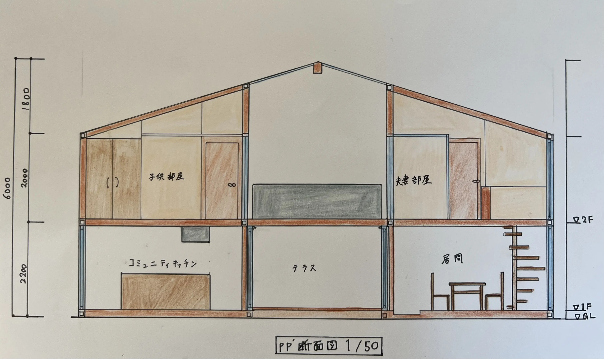

大屋根の家

設計趣旨
今回は食から広がる空間をテーマに挙げた。２つの建物に分けているが大屋根で覆われておりテラスは吹き抜けになっていて空間全体が一体となる様な造りになっている。一角をコミュニティキッチンとし、空間を分けるのではなく家族の居間のスペースも共有することで多くの人が訪れる集いの場となる様な空間になっている。清家清の私の家のように外と中の空間作り、屋内の様な屋外の空間を副題としてあげている。今回のエスキースは人の出入りが多いと思った。だからこそ靴を脱いで上がるのではなく、気軽に訪れられる様な雰囲気を大事にしている。例えばテラスに繋がる扉は全て開くようになっており、柱を扉に設けないでアントニン・レーモンドの自邸の様に扉とは別に柱を設けている。また、テラスは様々な使い方ができる様になっている。左右対称の建物であり、2階は個人のスペースでプライバシーを守れる様な構造になっている。子供部屋はいずれ一つの部屋になる様に中心にトイレを設けデザイン性のある分け方をした。
ギャラリー

設計図
